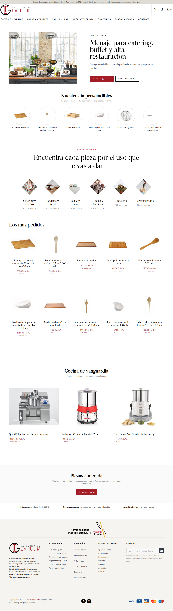

1. La página de inicio
De arriba abajo: los dos botones a lo que más se vende, las seis familias que más te piden, un rombo por pasillo, los diez productos que más se venden en la web y la maquinaria de cocina. Pulsa la imagen para verla en grande.




Lo que necesitamos de ti
Con estas cinco respuestas podemos seguir. Contéstale a Jared con lo que quieras cambiar.
- ¿Los nombres del menú son los que usan tus clientes?
- ¿Encuentras rápido lo que te piden los hoteles y los caterings?
- ¿Las seis familias de "Nuestros imprescindibles" son las correctas?
- En "Los más pedidos", ¿falta algo que vendas mucho fuera de la web?
- Quitamos del inicio los bloques "Especialistas en", "La selección natural" y los de Hoteles, Restaurantes y Catering. Esas páginas siguen existiendo. ¿Te parece bien?